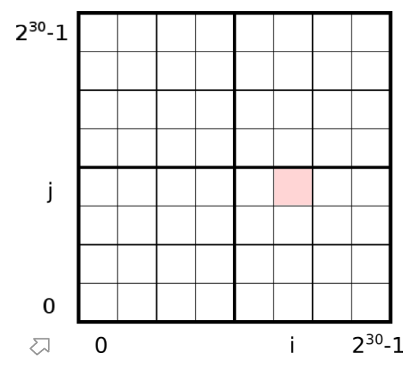
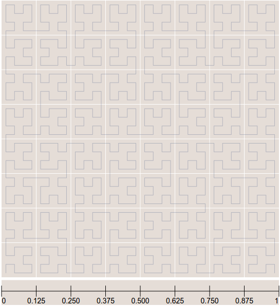
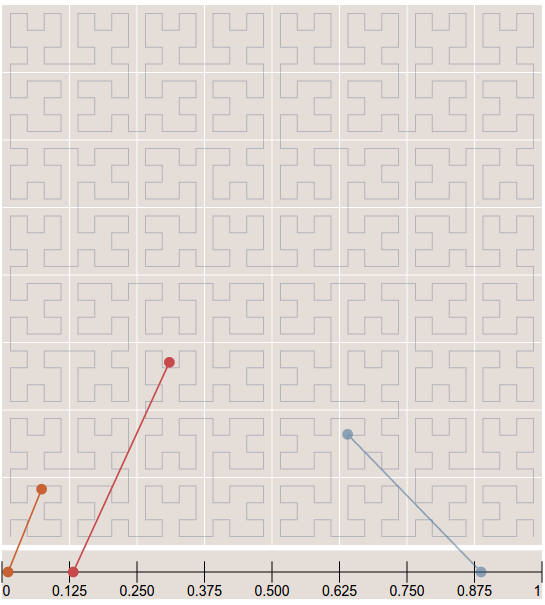
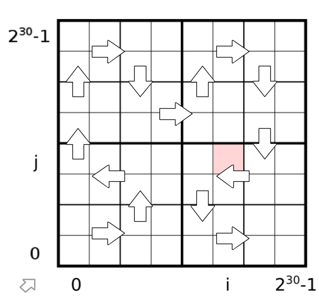
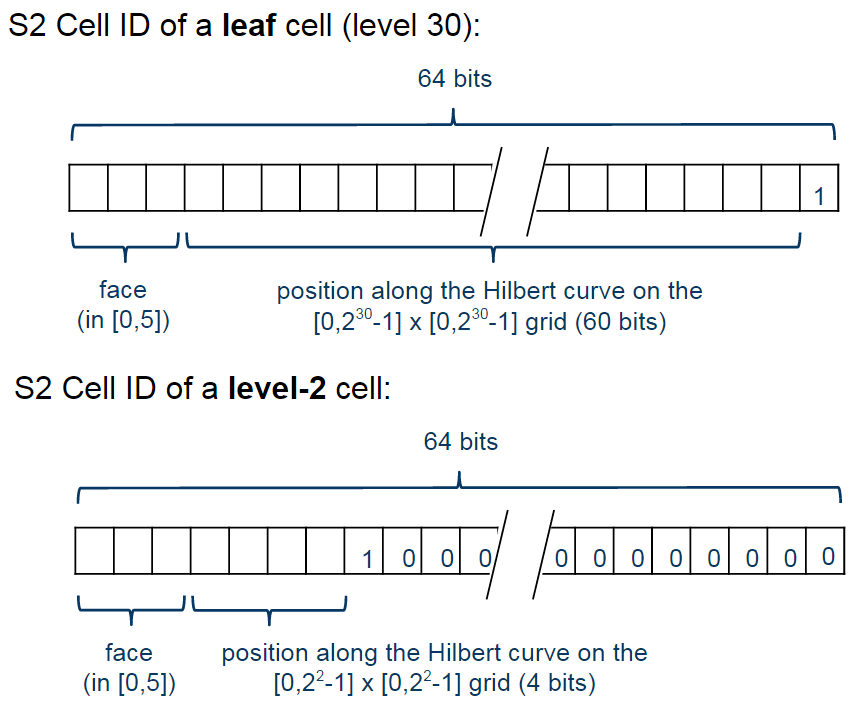

- Google Maps
- Uber
- Foursquare
- Yelp
- MongoDB
- ...
Google's S2
Pros
- C++ library
- Fast
- Released more than 5 years ago
- Compact. Only a 64-bit integer
Cons
- Rich functionality... but poor documentation
- Small community
- Incomplete ports to other languages
- Hard to learn and start development
How it works?
- Quad-tree
-
Some math
(lat, lng) -> (x, y, z)
(x, y, z) -> (face, i, j)
(face, i, j) -> S2CellId (64-bit integer)
Quad-tree
Hilbert Curve

Hilbert Curve
Hilbert Curve
Quad-tree with Hilbert Curve
Cell representation
Cell area
| Level | Min area | Max area |
|---|---|---|
| 0 | 85 011 012 km2 | 85 011 012 km2 |
| 1 | 21,252,753 km2 | 21,252,753 km2 |
| 12 | 3.31 km2 | 6.38 km2 |
| 30 | 0.48 cm2 | 0.93 cm2 |
That means, that every 1 cm2 on the earth have it's own ID , and every ID is only a 64-bit integer
How to get Cell ID?
>>> import s2
>>> latlng = s2.S2LatLng.FromDegrees(-30.043800, -51.140220)
>>> cell = s2.S2CellId.FromLatLng(latlng)
>>> cell.level()
30
>>> cell.id()
10743750136202470315
How to get parent cell?
>>> parent = cell.parent()
>>> print parent.level()
29
>>> parent.id()
10743750136202470316
>>> cell.contains(parent)
False
>>> parent.contains(cell)
True
How to create a covering?
>>> region_rect = S2LatLngRect(
S2LatLng.FromDegrees(-51.264871, -30.241701),
S2LatLng.FromDegrees(-51.04618, -30.000003))
>>> coverer = S2RegionCoverer()
>>> coverer.set_min_level(8)
>>> coverer.set_max_level(15)
>>> coverer.set_max_cells(500)
>>> covering = coverer.GetCovering(region_rect)